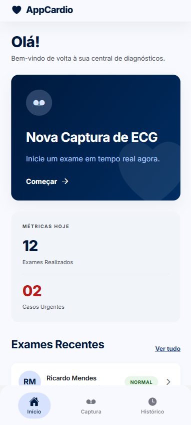
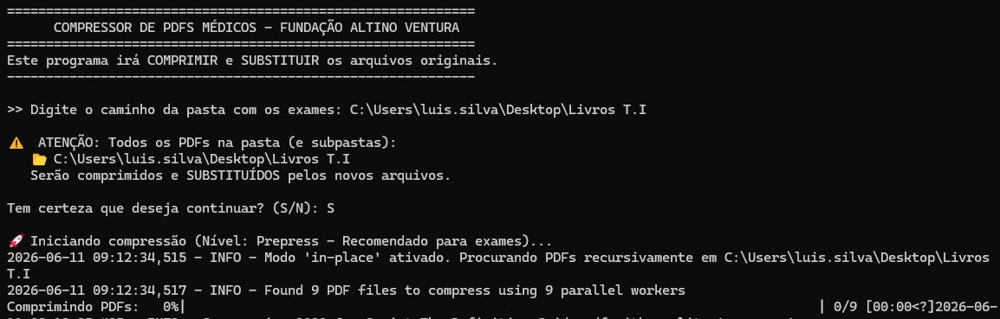

Perfil Profissional
Formação Acadêmica
CESAR School
Tecnólogo em Análise e Desenvolvimento de Sistemas (ADS)
Foco no desenvolvimento de software voltado ao mercado, metodologias ágeis, projetos com clientes reais e fundamentos sólidos de engenharia de software.
Universidade Federal de Pernambuco (UFPE)
Bacharelado em Nutrição
Formação em saúde com ênfase em Nutrição Clínica, Administração de Unidade de Alimentação e Nutrição (UAN) e Saúde Pública.
Competências
Técnicas (Hard Skills)
Desenvolvimento & Frameworks
Banco de Dados
Ferramentas
Comportamentais (Soft Skills)
Projetos Atuais
AppCardio
Aplicativo móvel de monitoramento cardiológico integrado à modelo de Inteligência Artificial.
Criar uma aplicação mobile que utilize um modelo de inteligência artificial pré-treinado para analise da derivação DII em imagens de eletrocardiograma. Com o objetivo de auxiliar no diagnóstico de saúde cardiaca.
Atuação atual como desenvolvedor Frontend Mobile utilizado Framework React Native, criação do design das telas do aplicativo e integração do frondend com backend desenvolvido em python que gerencia o modelo de para análise das imagen enviadas.
assets/imagens/appcardio.png

Desenvolvimento Técnico
A aplicação foi construída com foco em ser simples e intuitiva com uso de processamento assíncrono e comunicação com a rede neural profunda por meio de payloads e requisições HTTP.
Dificuldades Superadas
Desafio: Desenvolver uma interface
Mobile mesmo sem experiência
Solução:Como estou cursandoa disciplina de Desenvolvimento
Mobile em Paralelo. Os conhecimentos adquiridos durante
a disciplina foram sendo aplicados aos projeto. Assim,
fortalecendo a minha base na tecnologia utilizada.
Aprendizados
Aprendizado sobre integração com API de inteligência artificial em ambientes móveis, definição de objetivos e atividades de sprints, colaboração no desenvolvimento utilizando metodologia GitFLow, Design System e desenvolvimento com React Native.
Automação e Integração Hospitalar
Otimização operacional, queries analíticas e portais internos para a Fundação Altino Ventura.
Eliminar processos de conferência manuais e integrar fluxos operacionais de larga escala do ERP SoulMV, unificando dados, criando triggers de alerta em tempo real e disponibilizando portais internos de consulta rápida para o time administrativo.
Responsável pelo mapeamento das regras de negócio do banco Oracle, desenvolvimento de triggers e procedures PL/SQL críticas, criação de scripts em Python para automação de tarefas manuais e auxílio na codificação do portal web em React.js e Node.js.
assets/imagens/automacao-fav.png

🚀 Desenvolvimento Técnico
Desenvolvimento focado em scripts e bancos relacionais Oracle corporativos. Procedures em PL/SQL foram reestruturadas com uso de bulk collects e índices específicos, otimizando consultas complexas que antes travavam o sistema hospitalar, reduzindo o tempo de resposta em até 80%.
💡 Dificuldades Superadas
Desafio: Mapear tabelas e
relacionamentos não documentados no gigantesco e
complexo schema do ERP SoulMV.
Solução:
Engenharia reversa cuidadosa de queries, monitoramento
de logs de transação com DBA sênior e compilação de um
dicionário de dados interno para a equipe de
desenvolvimento.
📚 Aprendizados Coletados
Domínio avançado em PL/SQL Oracle e performance de queries. Compreensão aprofundada de fluxos operacionais de saúde pública e privada de alta complexidade e a importância da integridade e governança de dados sensíveis sob as diretrizes da LGPD.